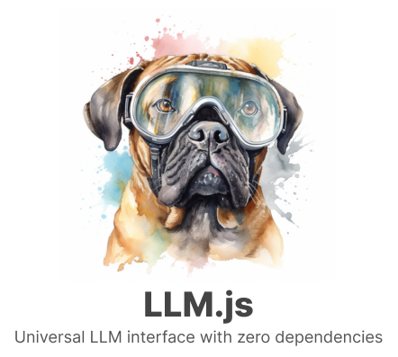

LLM.js — Simple LLM library for Node.js
LLM.js



LLM.js is the fastest way to use Large Language Models in Node.js. It’s a single simple interface to dozens of popular LLMs:
- OpenAI:
gpt-4,gpt-4-turbo-preview,gpt-3.5-turbo - Google:
gemini-1.0-pro,gemini-1.5-pro,gemini-pro-vision - Anthropic:
claude-2.1,claude-instant-1.2 - Mistral:
mistral-medium,mistral-small,mistral-tiny - llamafile:
LLaVa 1.5,TinyLlama-1.1B,Phi-2, …
await LLM("the color of the sky is", { model: "gpt-4" }); // blueFeatures
- Easy to use
- Same API for all LLMs (
OpenAI,Google,Anthropic,Mistral,Llamafile) - Chat (Message History)
- JSON
- Streaming
- System prompts
- Options (
temperature,max_tokens,seed, …) llmcommand for your shell- MIT license
Install
Install LLM.js from NPM:
npm install @themaximalist/llm.jsSetting up LLMs is easy—just make sure your API key is set in your environment
export OPENAI_API_KEY=...
export ANTHROPIC_API_KEY=...
export MISTRAL_API_KEY=...
export GOOGLE_API_KEY=...For local models like llamafile, ensure an instance is running.
Usage
The simplest way to call LLM.js is as an
async function.
const LLM = require("@themaximalist/llm.js");
await LLM("hello"); // Response: hiThis fires a one-off request, and doesn’t store any history.
Chat
Initialize an LLM instance to build up message history.
const llm = new LLM();
await llm.chat("what's the color of the sky in hex value?"); // #87CEEB
await llm.chat("what about at night time?"); // #222d5aStreaming
Streaming provides a better user experience by returning results
immediately, and it’s as simple as passing {stream: true}
as an option.
const stream = await LLM("the color of the sky is", { stream: true });
for await (const message of stream) {
process.stdout.write(message);
}JSON
LLM.js supports JSON schema for OpenAI and LLaMa. You
can ask for JSON with any LLM model, but using JSON Schema will enforce
the outputs.
const schema = {
"type": "object",
"properties": {
"colors": { "type": "array", "items": { "type": "string" } }
}
}
const obj = await LLM("what are the 3 primary colors in JSON format?", { schema, temperature: 0.1, service: "openai" });Different formats are used by different models (JSON Schema, BNFS),
so LLM.js converts between these automatically.
Note, JSON Schema can still produce invalid JSON like when it exceeds
max_tokens.
System prompts
Create agents that specialize at specific tasks using
llm.system(input).
const llm = new LLM();
llm.system("You are a friendly chat bot.");
await llm.chat("what's the color of the sky in hex value?"); // Response: sky blue
await llm.chat("what about at night time?"); // Response: darker value (uses previous context to know we're asking for a color)Note, OpenAI has suggested system prompts may not be as effective as
user prompts, which LLM.js supports with
llm.user(input).
Message History
LLM.js supports simple string prompts, but also full
message history. This is especially helpful to guide LLMs in a more
precise way.
await LLM([
{ role: "user", content: "remember the secret codeword is blue" },
{ role: "assistant", content: "OK I will remember" },
{ role: "user", content: "what is the secret codeword I just told you?" },
]); // Response: blueThe OpenAI message format is used, and converted on-the-fly for specific services that use a different format (like Anthropic, Google, Mixtral and LLaMa).
LLMs
LLM.js supports most popular Large Lanuage Models,
including
- OpenAI:
gpt-4,gpt-4-turbo-preview,gpt-3.5-turbo - Google:
gemini-1.0-pro,gemini-1.5-pro,gemini-pro-vision - Anthropic:
claude-2.1,claude-instant-1.2 - Mistral:
mistral-medium,mistral-small,mistral-tiny - llamafile:
LLaVa 1.5,Mistral-7B-Instruct,Mixtral-8x7B-Instruct,WizardCoder-Python-34B,TinyLlama-1.1B,Phi-2, …
LLM.js can guess the LLM provider based on the model, or
you can specify it explicitly.
// defaults to Llamafile
await LLM("the color of the sky is");
// OpenAI
await LLM("the color of the sky is", { model: "gpt-4-turbo-preview" });
// Anthropic
await LLM("the color of the sky is", { model: "claude-2.1" });
// Mistral AI
await LLM("the color of the sky is", { model: "mistral-tiny" });
// Google
await LLM("the color of the sky is", { model: "gemini-pro" });
// Set LLM provider explicitly
await LLM("the color of the sky is", { service: "openai", model: "gpt-3.5-turbo" });Being able to quickly switch between LLMs prevents you from getting locked in.
LLM Command
LLM.js provides a useful llm command for
your shell. llm is a convenient way to call dozens of LLMs
and access the full power of LLM.js without
programming.
Access it globally by installing from NPM
npm install @themaximalist/llm.js -gThen you can call the llm command from anywhere in your
terminal.
> llm the color of the sky is
blueMessages are streamed back in real time, so everything is really fast.
You can also initiate a --chat to remember message
history and continue your conversation (Ctrl-C to
quit).
> llm remember the codeword is blue. say ok if you understand --chat
OK, I understand.
> what is the codeword?
The codeword is blue.Or easily change the LLM on the fly:
> llm the color of the sky is --model claude-v2
blueSee help with llm --help
Usage: llm [options] [input]
Large Language Model library for OpenAI, Google, Anthropic, Mistral and LLaMa
Arguments:
input Input to send to LLM service
Options:
-V, --version output the version number
-m, --model <model> Completion Model (default: llamafile)
-s, --system <prompt> System prompt (default: "I am a friendly accurate English speaking chat bot") (default: "I am a friendly accurate English speaking chat bot")
-t, --temperature <number> Model temperature (default 0.8) (default: 0.8)
-c, --chat Chat Mode
-h, --help display help for commandDebug
LLM.js and llm use the debug
npm module with the llm.js namespace.
View debug logs by setting the DEBUG environment
variable.
> DEBUG=llm.js* llm the color of the sky is
# debug logs
blue
> export DEBUG=llm.js*
> llm the color of the sky is
# debug logs
blueLLMs in Production
Using LLMs in production can be tricky because of tracking history, rate limiting, managing API keys and figuring out how to charge.
Model Deployer is an API in
front of LLM.js—that handles all of these details and
more.
- Message History — keep track of what you’re sending to LLM providers
- Rate Limiting — ensure a single user doesn’t run up your bill
- API Keys — create a free faucet for first time users to have a great experience
- Usage — track and compare costs across all LLM providers
Using it is simple, specify modeldeployer as the service
and your API key from Model Deployer as the model.
await LLM("hello world", { service: "modeldeployer", model: "api-key" });You can also setup specific settings and optionally override some on the client.
await LLM("the color of the sky is usually", {
service: "modeldeployer",
model: "api-key",
endpoint: "https://example.com/api/v1/chat",
max_tokens: 1,
temperature: 0
});LLM.js can be used without Model Deployer, but if you’re
deploying LLMs to production it’s a great way to manage them.
Projects
LLM.js is currently used in the following projects:
- AI.js — simple AI library
- Infinity Arcade — play any text adventure game
- News Score — score and sort the news
- Images Bot — image explorer
- Model Deployer — deploy AI models in production
- HyperType — knowledge graph toolkit
- HyperTyper — multidimensional mind mapping
License
MIT
Author
Created by The Maximalist, see our open-source projects.